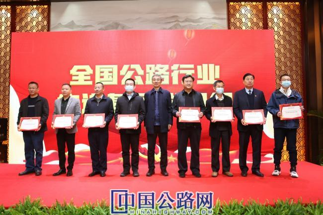

微官网
微官网
——全国公路系统党委书记工作座谈会暨全国公路政研会第31届年会在湖南长沙召开
2020-11-25 文/《中国公路》记者 张波 杨燕 赵晓夏 孙誉菡11月25日，全国公路系统党委书记工作座谈会暨全国公路政研会第31届年会在湖南长沙召开，全国各地150余位政工干部参加会议。此次大会的主题为“守初心担使命 共同迎接建党百年”。
出席此次会议的主要领导有交通运输部政策研究室副巡视员李占川；中国公路学会党委副书记、副理事长兼秘书长，全国公路职工思想政治工作研究会秘书长刘文杰；全国公路职工思想政治工作研究会名誉秘书长于志涛；湖南省交通运输厅党组成员、副厅长肖文伟；湖南省公路事务中心党委书记、主任张汉华；北京市交通委员会巡视员商万友；河北省交通运输厅公路管理局纪委书记王冬梅；黑龙江省公路事业发展中心纪检书记、副主任林晓海；安徽省公路管理服务中心党委书记、主任夏一峰；江西省公路管理局党委书记熊华武；山东省交通运输事业服务中心党委副书记逄健敏；湖北省公路局负责人张磊；广东省公路事务中心党委副书记旋秋民；海南省公路管理局省局党委副书记、纪委书记廖朝阳；重庆市公路事务中心纪委书记周平；陕西省公路局副局长刘孟林；青海省公路局党委书记刘芳涛；甘肃省公路局党委书记左勇翔，甘肃省公路发展集团有限公司党委书记、董事长姚志明；新疆维吾尔自治区公路管理局党委书记、副局长余占军；黑龙江省公路勘察设计院纪委书记郭楣。中国公路学会办事机构党总支副书记、《中国公路》杂志社社长刘传雷主持大会，中国公路学会党委委员、副秘书长、工会主席乔云宣读表彰决定。
肖文伟介绍了湖南公路交通的概况，并对来自全国各地政工干部表示热烈欢迎。李占川对全国公路行业的政工干部提出三点意见，首先要深入学习领会宣传贯彻党的十九届五中全会精神是当前和今后一个时期的重要政治任务，其次要全面辩证分析，准确把握做好政研工作的国内外大势和时代脉搏，再次要守正创新做好新时代交通政研工作，为加快建设交通强国凝聚共识、形成合力。
刘文杰表示，目前，全国公路政研会是公路行业硕果仅存的行业交流平台，成立31年来，在支持公路事业发展、交流党建经验、宣传行业精神文明品牌方面做了大量工作。2021年是建党百年的重大历史节点，公路政研会也将举行一系列重要活动，积极总结反映行业党建发展成果，为行业发展提供更多的支撑，真正成为政工干部的精神家园。
张汉华，余占军，夏一峰，湖南省浏阳市委副书记、市长吴新伟，围绕“守初心 担使命 党建引领公路行业新发展”的主题，分别就公路行业发展面临的新问题和新形势、党建引领公路行业改革发展、党建引领抗击疫情与洪灾、党建引领推动公路高质量发展等做报告，展示了全国和各省份今年以来党建工作的成果、亮点与经验，也引发大家对不平凡的2020年的再次回顾。
为推进行业深入学习十九届五中全会精神、迎接百年建党重要历史节点，大会还邀请了中共湖南省委党校教授王连花讲党的光辉历程与宝贵经验。大会还邀请了贵州省公路开发有限责任公司副书记、工会主席、贵州省交通运输厅驻从江县大歹村第一书记唐隽永，湖南省公路事务中心、蜡树村扶贫工作队队长邓志斌，就驻村工作分享经验与体会，更加增强了与会代表对交通扶贫、驻村工作的深刻认识和体会。
会上还为65家全国公路行业优秀基层党组织和60篇优秀论文颁奖。



全国公路行业先进基层党组织颁奖
全国公路系统优秀政研论文颁奖